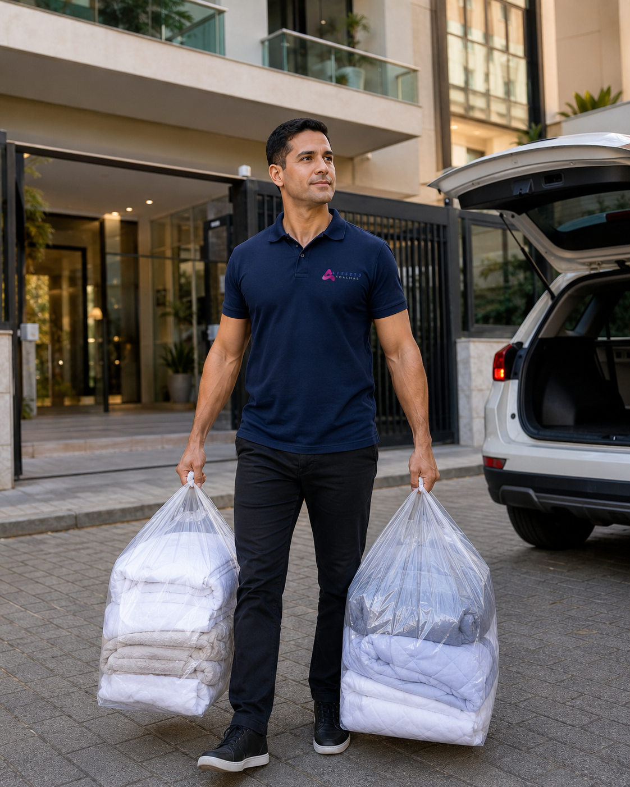
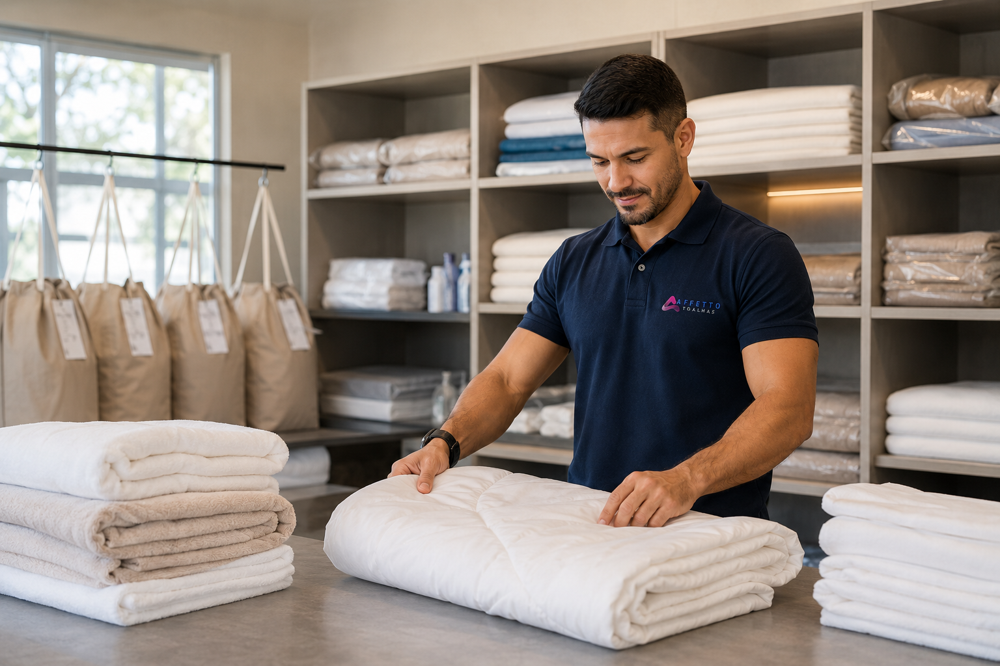

Cortinas
Lavagem profissional de cortinas com avaliação da peça, retirada e entrega na região.
Ver lavagem de cortinasCuidamos das suas peças com retirada e entrega, processo profissional, produtos biodegradáveis e atenção a cada detalhe. Atendemos Itapema, Balneário Camboriú, Itajaí e Porto Belo.

Serviços especializados para peças importantes da casa, com praticidade do início ao fim.
Lavagem profissional de cortinas com avaliação da peça, retirada e entrega na região.
Ver lavagem de cortinas
Higienização de edredons, cobertores, mantas, lençóis e peças volumosas.
Ver lavagem de edredons
Higienização de tapetes conforme avaliação do material, manchas, odores e condições da peça.
Tirar dúvidas sobre tapetesVocê solicita pelo WhatsApp, a Affetto organiza a retirada, higieniza suas peças e entrega tudo pronto.
Informe sua cidade, bairro e quais peças deseja lavar.
Organizamos a coleta conforme rota, agenda e disponibilidade.
Processo profissional, produtos biodegradáveis e atenção ao tipo de material.
Prazo médio de 3 dias úteis, conforme peça, volume e agenda.
A Affetto não trabalha com soluções improvisadas. Somos uma lavanderia especializada, com processo, equipe e estrutura para cuidar de têxteis do lar.
Produtos profissionais biodegradáveis e adequados ao processo de lavanderia.
Avaliamos manchas, mofo, desgaste e tecidos sensíveis quando necessário.
Mais praticidade para casas, apartamentos, condomínios e rotinas corridas.
Itapema, Balneário Camboriú, Itajaí e Porto Belo conforme rota e disponibilidade.

Desde 2020, a Affetto atende clientes que valorizam praticidade, qualidade e confiança no cuidado com cortinas, edredons, tapetes e roupas de cama.
Consulte a disponibilidade de retirada e entrega para sua cidade e bairro.
Praça principal, com atendimento conforme rota e disponibilidade.
Atendimento para apartamentos, casas e imóveis de temporada.
Consulte disponibilidade de rota para seu bairro.
Coleta e entrega conforme agenda regional.
O atendimento depende de rota, agenda e disponibilidade para cada região.
clientes atendidos desde 2020, com reputação local construída em atendimento, cuidado e qualidade.
Nossa reputação local é construída com atendimento, cuidado e qualidade na entrega de cada peça.
Respostas curtas para as principais dúvidas antes de solicitar uma coleta.
Sim. A Affetto realiza retirada e entrega conforme cidade, rota, agenda e disponibilidade.
O prazo médio é de 3 dias úteis, podendo variar conforme tipo de peça, volume e agenda.
Cortinas com mofo passam por avaliação. O resultado depende do tecido, tempo da mancha, umidade acumulada e estado da peça.
Utilizamos produtos profissionais biodegradáveis, adequados ao processo de lavanderia. Não trabalhamos com misturas caseiras.
Em muitos casos, sim, conforme orientação do cliente e regras do condomínio.
Fale com a Affetto pelo WhatsApp, informe sua cidade, bairro e as peças que deseja lavar. Nossa equipe orienta orçamento, retirada e prazo.